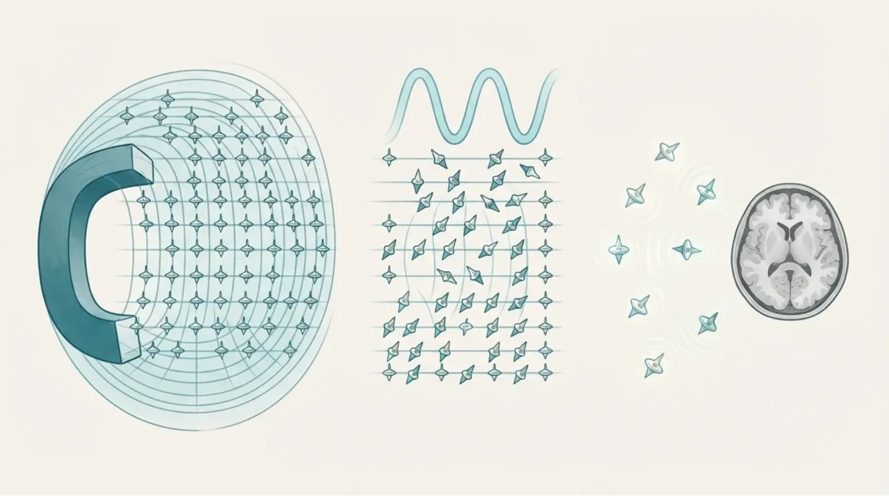
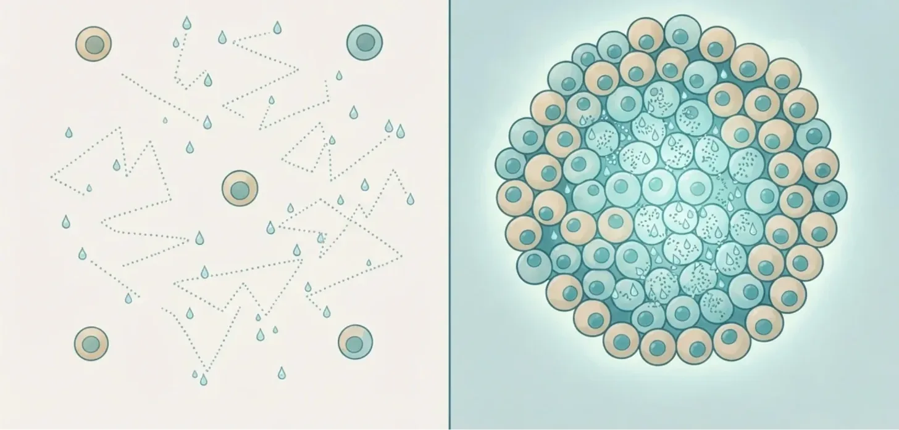
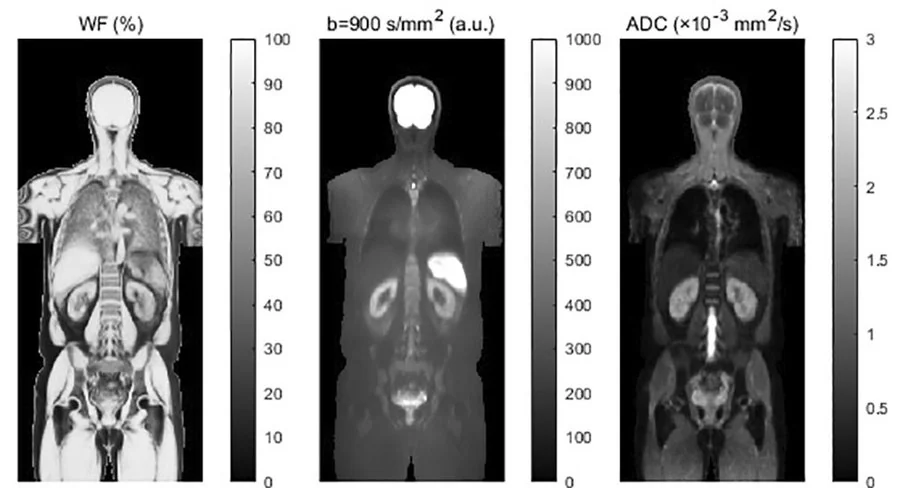
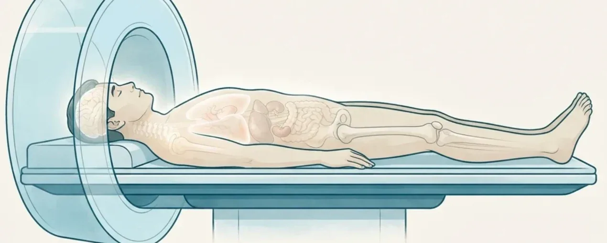
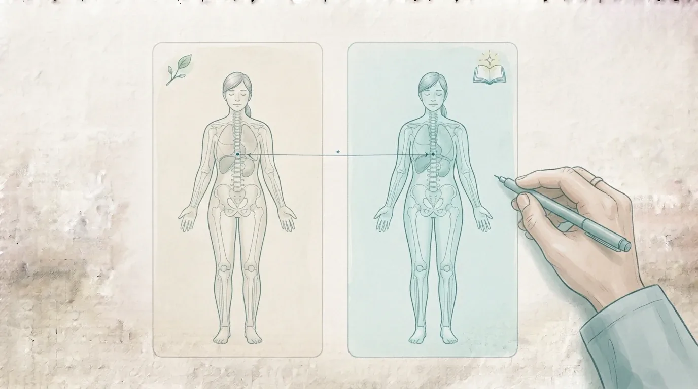

The scan
Most whole-body MRI looks at everything once, quickly, in the same way for everyone. Ours is built differently: the complete scan from the top of the head to mid-thigh, every year, and then dedicated sequences organ by organ, chosen by your age and sex. It is the most thorough preventive MRI we know how to build, and it is designed to be repeated.
The film
How MRI sees
Most of the body is water, and water is full of hydrogen. Each hydrogen atom behaves like a tiny compass. MRI is the art of nudging those compasses and listening to them.
There is no ionising radiation, which is the clearest difference from CT and the reason an MRI can reasonably be repeated every year for decades.

Inside the magnet, billions of hydrogen compasses in your body line up with the field.
A short radio pulse, harmless and with no X-rays, knocks them out of line.
As they swing back they give off a faint echo. Fat, water and tissue settle at different speeds.
A computer turns millions of echoes into thin slices, from the top of the head to mid-thigh.
Three ways of seeing
Change the timing of the radio pulses and different tissues glow. The scan takes several pictures of the same body, each asking a different question.

A precise map of every organ.
T1 Dixon separates water from fat. It draws the shape of each organ and shows the bone marrow, where disease replaces healthy fat.
Anything containing fluid glows.
T2 tells a harmless cyst from a solid lump, and reads the lungs, the bowel and the pelvis.
Where water cannot move freely.
Packed cells, as in most tumours and enlarged lymph nodes, light up. It is the main detector of the whole-body scan, and it gives a number that can be compared year on year.

Organ by organ
A whole-body scan alone sees a lot, but coarsely. We add dedicated sequences for the organs where looking closely changes what can be found early, and we keep every setting the same each year so this year can be compared with last.
From the top of the head to mid-thigh, in five table positions, without contrast.
Sequences aimed at one organ, at the resolution that organ needs.
Some members with a family history add a further option, such as imaging of the brain arteries or of the pancreatic ducts. We discuss this with you before booking.
The body map
Choose a member, then tap a region to see what we look for there and which technique does the work.

The difference
One set of fast sequences, the same for everyone.
The complete scan for everyone, plus dedicated blocks chosen by age and sex.
Thick slices from the body sequences.
Its own 3D sequences at 1 mm, re-sliced in exactly the same plane every year.
Looked at, rarely measured.
Fat and iron measured as numbers you can follow year on year.
Seen in passing on the pelvis images.
A dedicated study to the international PI-RADS standard, linked to your PSA.
Often not examined, or without contrast.
An abbreviated contrast breast MRI, the most sensitive breast imaging there is, timed to your cycle.
A new scan, read on its own.
Locked settings, so each scan is compared with your previous ones.
On the day
You lie still while the table moves you through the magnet. It is noisy, and it is dull. That is the whole of the unpleasantness.
The whole-body scan uses no injection. Women from 40 have the breast block at the end, which uses a small dose of a contrast agent of the most stable type, and is booked in the right week of the cycle.
Indicative. The exact time depends on which blocks are due for you.
The limits
Every one of these is a reason someone might not join. We publish them anyway, because a screening service that hides its limits is not one you should trust with a yearly appointment.
No imaging test finds every cancer. MRI is weak on the lining of the colon, on most skin cancers, and on small lung nodules, which is exactly why colonoscopy, dermatology and lung CT still matter for the people they are indicated for.
Nualia is complementary to mammography, colonoscopy, cervical screening and lung CT. Anyone who tells you a whole-body MRI replaces those is selling you something.
This is the honest cost of screening. Some findings are incidental: real, visible, and harmless. Pursuing them causes anxiety and sometimes procedures. You will hear this from us before you are scanned, not after.
It means nothing was visible on the day, at the resolution used. Things can appear between two scans. This is a reason to come back, not a reason to relax.
There is no mortality-benefit evidence for whole-body screening of people at average risk, and we will not imply otherwise. What is documented is that many cancers found while still localised are a different clinical situation from the same cancers found late.
We detect and we refer. We take no fee from anyone we refer you to. That boundary is the whole reason you can trust what we tell you.
The read
A licensed consultant radiologist reads and signs every scan. Software lines this year's images up against last year's, so the same small thing in the same place is measured both times. The radiologist decides, and no result reaches you without a doctor sitting down to explain it.

Begin
A short conversation first: what screening can and cannot do, what we would look at, and whether this is right for you at all. No obligation, and no medical questions by email.